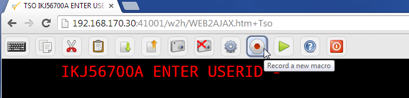
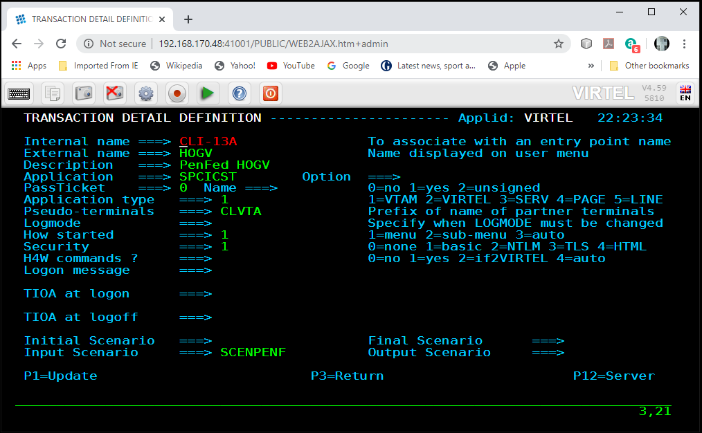
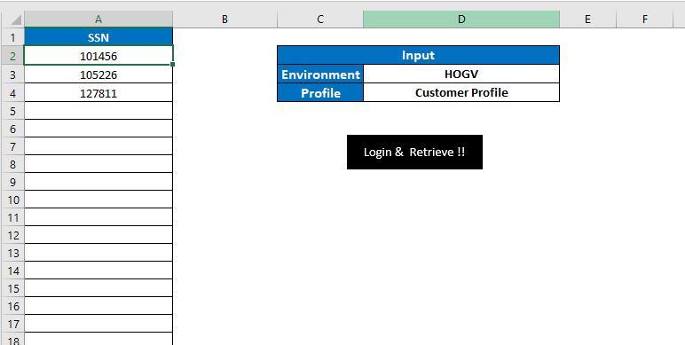
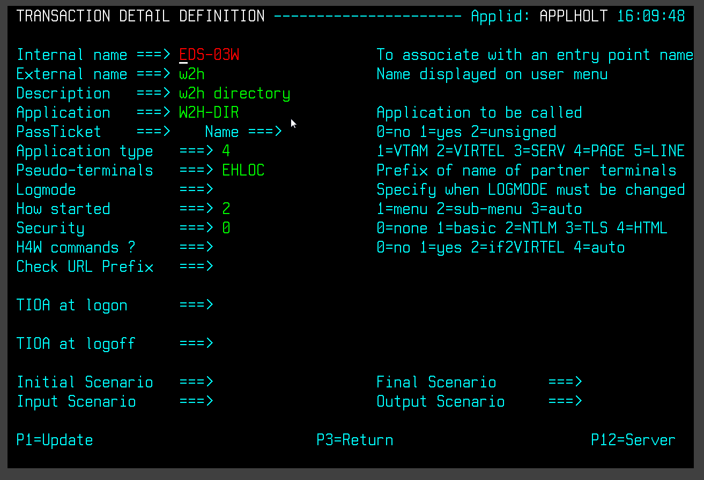
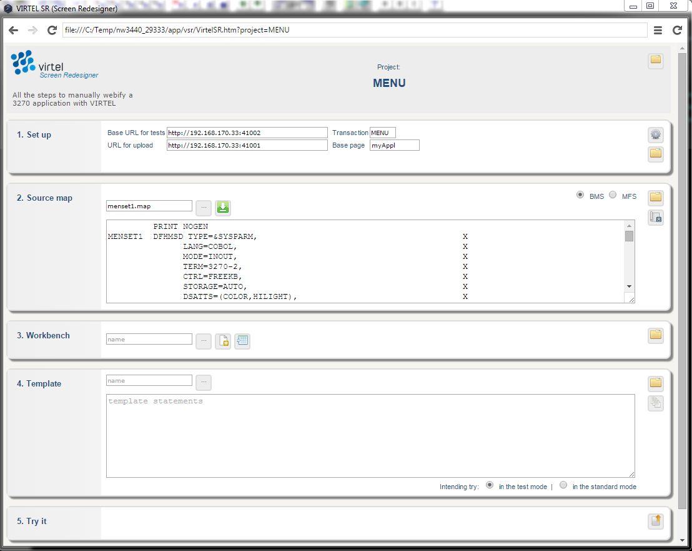

Converting a VBA macro¶
Introduction¶
In this newsletter we discuss how to migrate an EXCELVBA macro(s) to use VIRTEL’s scenario language and perform the same business logic. Currently, the VBA macro uses Attachmate Extra objects to establish a 3270 session and scrape the 3270 buffers. Application navigation, data validation and session management are also performed within the VBA code. The VBA macro is driven by a EXECL spread sheet with input data fields, buttons and selection list. The idea of this migration is to maintain as much of the ‘business logic’ of the original macro as possible and only replace the 3270 communication processes with equivalent Virtel APIs.
Overview of the business process¶
The business process provides extraction of data for the following: - - Customer Profile - Loan Accounts - Deposit Accounts
In this POC, only Customer Profile information is considered. Three environments HOGV,HOGS and HOGL are CICS regions that can be accessed to provide the CICS interface. These interfaces are defined as Virtel transactions, each one accessing a CICS system. Again, this POC accesses the same CICS system. See transactions CLI-13A, CLI-13B and CLI13-C.
Virtel Configuration¶
Three transactions are defined to represent the three CICS environments.

The detail of each transaction is shown below :-

The current VBA code maintains all of the MVC (model, view, controller) architecture. With the Virtel solution, the model and controller elements are moved to the supporting scenario, SCENPENF, which runs within the Virtel address space. The scenario is shown in Appendix A. The Virtel input scenario, SCENPENF, is associated with each transaction. This scenario now becomes the Model and Controller of the new MVC architecture, with the VBA code now only providing the View component. Navigational and data extraction are now handled by the scenario, whereas before, it was done in the VBA module.
Logic overview¶
A series of customer numbers is entered manually on the left-hand side. These match up with customer numbers in the CICS application transaction MENU. This application is used to simulate a CICS transaction extracting customer data. These customer data inquiries are sent to the mainframe via a HTTP requests within VBA using the MSXML2.XMLHTTP object. A Virtel VBA Class is used to contain all the necessary HTTP code required to support the operation. A Virtel object is created, based upon the Virtel Class, and is used for communicating between the Virtel STC running on the mainframe and the supporting VBA Module.
The first time the VBA module is called, security credentials are obtained through two VBA InputBox calls :-
userid = InputBox("Enter your mainframe Userid")
password = InputBox("Enter your mainframe Password")
The IP address and PORT information for Virtel are held in two Public Constants at the beginning of the VBA Module 1.
Public Const host = "192.168.170.48", _
port = "41002"
Each time an inquiry is made a HTTP request is sent to Virtel. The request contains all the information needed by the Virtel scenario SCENPENF with the scenario extracting data from the URL. The extracted data is used to perform the following business logic in the Virtel scenario :-
- Logon to CICS
- Navigate through to the detail Customer Inquiry panel.
- Extract Name, Address1 and City from the screen buffer
- Create a response in the form of a CSV string :- name; address1; city
- Send the response back to the outstanding HTTP request.
An example of the URL generated by the VBA Virtel object is below :-
http://192.168.170.48:41002/w2h/WEB2AJAX.htm+HOGL?userName=sptholt&password=pw&trans=MENU&custNo=105226
The response data returned is in the form of a CSV string containing name, address1 and city. This information is then used to populate a second worksheet, CUPR. The next two diagrams show the input Excel object worksheet 1

The output Excel worksheet CUPR, is used to display the customer information extracted from the CSV response string. Note that only three fields are populated, those being Name, Address1, and City :-

Menu Legacy Application¶
The legacy application that is used to provide the data is a simple CICS invoice system. A sample of the relevant input screens are shown below. First the Master menu.

Next, the customer inquiry screen : -

And finally, the customer detail screen.

It is from this screen that we navigate to within the Virtel scenario and then extract the Name, Address1 and City and return that data to the VBA code which is then used to populate the CUPR work sheet.
Overview of the SCENPENF scenario¶
The SCENPENF scenario performs the following functions after establishing a session with the CICS environment.
Entry : [Extract data from URL]
- Extract the following fields from the URL and place them into variables: -
- userName => userName
- password => password
- trans => trans CICS transaction
- custNo => custNo Customer Number
- GoTo LOGON
Label: LOGON [Sign on processing]
- Copy the userName and password into the CICS sign on screen
- Send Enter to the CICS application, check application for message DFHCE3549; signOn complete message.
- Goto START
Label : START [Screen Navigation]
- Copy the CICS transaction variable trans to CICS screen.
- Send Enter to the CICS application and wait for buffer with characters ‘MENMAP1’
- Call DOREGION sub-routine. Test return screen for any errors.
- Copy value=’1’ to location in 3270 buffer at line 5, column 27, for a length of 1.
- Send Enter to the CICS application and wait for buffer with characters ‘INQMAP3’
- Copy the custNo variable into the CICS screen at location row 5, column 27, for a length of 7.
- Call GETDATA sub-routine.
- Goto SENDMSG
Label : SENDMSG {Build OK response message]
- Create list variable concatenation string OK: with variable Message
- GoTo RETURN_RSP
Label : RETURN_RSP [Send Response to browser]
- Terminate 3270 session with CICS
- Convert response buffer from EBCDIC to ASCII
- Send response back to browser.
- Disconnect Virtel Session
- End scenario
Label : GETDATA [Build response buffer from 3270 buffer]
- Copy data from screen and place into variables name1, name2, addr1, addr2
- Build CSV Message buffer, concatenating variables name2,name1,addr1,addr2 and trim and blanks. String will look like: ‘Lennon,John;Penny Lane;Liverpool’.
- Return to call
Label : DOREGION [Example of validation and navigation of a 3270 screen buffer]
REGN0 EQU *
If (1,1,12) == "6.5 SWIFTSEC" then
REGN1 EQU *
If (4,2,17) == "Opened Sessions" then
COPY value "C" to location (5,10,1)
Send "Enter" to application
GOTO REGN1
Else
GOTO REGN2
Else
GOTO REGN3
REGN2 EQU *
SEND "PA2" to application
REGN2A EQU *
If (4,2,17) == "Application List" then
COPY value "C" to location (5,10,1)
Send "Enter" to application
GOTO REGN2A
Else
GOTO REGN4
REGN3 EQU *
SEND "PA2" to application
GOTO REGN0
REGN4 EQU *
Return to caller
Error handling
The error handling is very basic. For example, invalid credentials and other errors will be reported as a HTML message:-

An invalid customer number will return no data. See 999999 :-

If the CICS system is not available, you will get the following error reported :-

This error will also occur if you are signed onto CICS with your credentials through another Virtel session.
Appendix A¶
Scenario SCENPENF¶
SCENPENF SCREENS APPL=SCENPENF
*######################################################################
*## INPUT SCENARIO ##
*######################################################################
*
SCENARIO INPUT
DEBUG$ TRACE,SCENARIO
IF$ SESSION-SWITCH,THEN=RESUME
* Look for message DFHCE3520 (Please type your userid)
IF$ (23,02,09),EQ='DFHCE3520',ELSE=EXIT
*
COPY$ INPUT-TO-VARIABLE,FIELD='userName',VAR='userName'
IF$ NOT-FOUND,THEN=PARAM_ERR_USER
COPY$ INPUT-TO-VARIABLE,FIELD='password',VAR='password'
IF$ NOT-FOUND,THEN=PARAM_ERR_PWD
COPY$ INPUT-TO-VARIABLE,FIELD='trans',VAR='trans'
IF$ NOT-FOUND,THEN=PARAM_ERR_TRANS
COPY$ INPUT-TO-VARIABLE,FIELD='custNo',VAR='custNo'
IF$ NOT-FOUND,THEN=PARAM_ERR_CUSTNO,ELSE=LOGON
*
PARAM_ERR_USER EQU *
COPY$ VALUE-TO-VARIABLE,VAR=ErrorMsg,TYPE=REPLACE, *
VALUE='Missing required parameter (userName)'
GOTO$ ERRORMSG
*
PARAM_ERR_PWD EQU *
COPY$ VALUE-TO-VARIABLE,VAR=ErrorMsg,TYPE=REPLACE, *
VALUE='Missing required parameter (password)'
GOTO$ ERRORMSG
*
PARAM_ERR_TRANS EQU *
COPY$ VALUE-TO-VARIABLE,VAR=ErrorMsg,TYPE=REPLACE, *
VALUE='Missing required parameter (trans)'
GOTO$ ERRORMSG
*
PARAM_ERR_CUSTNO EQU *
COPY$ VALUE-TO-VARIABLE,VAR=ErrorMsg,TYPE=REPLACE, *
VALUE='Missing required parameter (custNo)'
GOTO$ ERRORMSG
*______________________________________________________________________
RESUME EQU *
IF$ (01,01,07),EQ='APO00PG',THEN=DOEXIT
IF$ (22,01,12),EQ='P3--------P4',THEN=DOP4
IF$ (01,02,04),EQ='MENU',THEN=DOCLEAR
IF$ (01,02,01),EQ='X',THEN=DOP3
IF$ (01,01,34),EQ='MENU123I Error: session terminated', x
THEN=DOEXIT,ELSE=DOP3
SCENARIO END
*______________________________________________________________________
LOGON EQU *
COPY$ VARIABLE-TO-SCREEN,VAR='userName',SCREEN=(10,26,08)
COPY$ VARIABLE-TO-SCREEN,VAR='password',SCREEN=(11,26,08)
* Send to application
ACTION$ TO-APPLICATION,KEY=7D
*
* on message DFHCE3549 (Signon is complete), press CLEAR SCREEN
IF$ (24,02,09),EQ='DFHCE3549',ELSE=EXIT
ACTION$ TO-APPLICATION,KEY=6D
GOTO$ START*______________________________________________________________________
SENDMSG DS 0H
COPY$ LIST-TO-VARIABLE,VAR='response',TYPE=REPLACE, *
LIST=('OK:','*Message')
GOTO$ RETURN_RSP
*______________________________________________________________________
START DS 0H
ERROR$ 0,'--- START'
COPY$ VARIABLE-TO-SCREEN,VAR='trans',SCREEN=(01,01,04)
ACTION$ TO-APPLICATION,KEY=7D, *
AND=(WAIT,'MENMAP1')
PERFORM$ DOREGION
COPY$ VALUE-TO-SCREEN,VALUE='1',SCREEN=(05,17,01)
ACTION$ TO-APPLICATION,KEY=7D, *
AND=(WAIT,'INQMAP3')
COPY$ VARIABLE-TO-SCREEN,VAR='custNo',SCREEN=(05,27,07)
ACTION$ TO-APPLICATION,KEY=7D
PERFORM$ GETDATA
GOTO$ SENDMSG
*______________________________________________________________________
DOLOGOFF DS 0H
PERFORM$ TRACE
COPY$ VALUE-TO-SCREEN,VALUE='CESF', *
SCREEN=(1,1,4),TYPE=ERASE-FIELD
ACTION$ TO-APPLICATION,KEY=7D, SEND CESF *
AND=(WAIT,'DFHCE3590'), *
MAXTIME=500
ACTION$ TO-APPLICATION,KEY=7D SEND ENTER
ACTION$ TERMSESS KILL SESSION
*
* Send any response back to browser
*
CONVERT$ EBCDIC-TO-ASCII,VAR='response',TABLE='IBM1147'
SEND$ AS-ANSWER,VAR='response',TYPE='text/plain', *
EXPIRES=IMMEDIATELY
DEBUG$ NOTRACE,SCENARIO
SCENARIO END
*______________________________________________________________________
DOCLEAR DS 0H
ERROR$ 0,'--- DOCLEAR'
* Send CLEAR to exit from the application
ACTION$ TO-APPLICATION,KEY=6D
GOTO$ RESUME
*______________________________________________________________________
DOP3 DS 0H
ERROR$ 0,'--- DOP3'
* Send PF3 to go back to previous menu within the application
ACTION$ TO-APPLICATION,KEY=F3
GOTO$ RESUME
*______________________________________________________________________
DOP4 DS 0H
ERROR$ 0,'--- DOP4'
* Send PF4 to exit from the application
ACTION$ TO-APPLICATION,KEY=F4
GOTO$ RESUME
*______________________________________________________________________
DOEXIT DS 0H
ERROR$ 0,'--- DOEXIT'
* Send CLEAR before starting new transaction
ACTION$ TO-APPLICATION,KEY=6D
GOTO$ START
*______________________________________________________________________
EXIT EQU *
ERROR$ 0,'--- EXIT'
SCENARIO END
*______________________________________________________________________
*
*######################################################################
*## H E L P E R S ##
*######################################################################
*
ERRORMSG EQU *
COPY$ LIST-TO-VARIABLE,VAR='response',TYPE=REPLACE, *
LIST=('KO:','*ErrorMsg')
GOTO$ RETURN_RSP
*______________________________________________________________________
RETURN_RSP EQU *
ACTION$ TERMSESS
CONVERT$ EBCDIC-TO-ASCII,VAR='response',TABLE='IBM1147'
SEND$ AS-ANSWER,VAR='response',TYPE='text/plain', *
EXPIRES=IMMEDIATELY
DEBUG$ NOTRACE,SCENARIO
ERROR$ 0,'--- DISCONNECT'
ACTION$ DISCONNECT
SCENARIO END
*
*######################################################################
*## OUTPUT SCENARIO ##
*######################################################################
*
SCENARIO OUTPUT
SCENARIO END
*
*****************
*** GETDATA ***
*****************
GETDATA SCENARIO SUBROUTINE
COPY$ SCREEN-TO-VARIABLE,SCREEN=(07,27,16),VAR=name1, *
TYPE=REPLACE
COPY$ SCREEN-TO-VARIABLE,SCREEN=(08,27,16),VAR=name2, *
TYPE=REPLACE
COPY$ SCREEN-TO-VARIABLE,SCREEN=(09,27,30),VAR=addr1, *
TYPE=REPLACE
COPY$ SCREEN-TO-VARIABLE,SCREEN=(10,27,16),VAR=addr2, *
TYPE=REPLACE
COPY$ LIST-TO-VARIABLE,VAR='message',TYPE=REPLACE, *
LIST=('*name2',',','*name1',';', *
'*addr1',';','*addr2'), *
LTRIM=(' '),RTRIM=(' ')
SCENARIO END
*
*****************
*** DOREGION ***
*****************
DOREGION SCENARIO SUBROUTINE
REGN0 LABEL$
IF$ (01,01,12),EQ="6.5 SWIFTSEC",ELSE=REGN3
* loop through Session Selection
REGN1 LABEL$
IF$ (04,02,17),EQ='Opened Sessions ',ELSE=REGN2
COPY$ VALUE-TO-SCREEN,VALUE='C',SCREEN=(05,10,01)
ACTION$ TO-APPLICATION,KEY=7D
GOTO$ REGN1
* loop through Application List. Send PA2 first
REGN2 LABEL$
ACTION$ TO-APPLICATION,KEY=6E
REGN2A LABEL$
IF$ (04,02,17),EQ='Application List ',ELSE=REGN4
COPY$ VALUE-TO-SCREEN,VALUE='C',SCREEN=(05,10,01)
ACTION$ TO-APPLICATION,KEY=7D
GOTO$ REGN2A
REGN3 LABEL$
* Send PA2 and start again.
ACTION$ TO-APPLICATION,KEY=6E
GOTO$ REGN0
REGN4 LABEL$
SCENARIO END
*****************
*** TRACE ***
*****************
TRACE SCENARIO SUBROUTINE
*
COPY$ VALUE-TO-VARIABLE,VAR='ruler1', X
VALUE='--- 0---|--- 10---|--- 20---|--- 30---|--- 40---X
|--- 50---|--- 60---|--- 70---|--- 80---|', X
TYPE=REPLACE
COPY$ VALUE-TO-VARIABLE,VAR='ruler2', X
VALUE='123456789|123456789|123456789|123456789|123456789X
|123456789|123456789|123456789|123456789|', X
TYPE=REPLACE
ERROR$ 0,' ','*ruler1'
ERROR$ 0,' ','*ruler2'
LOOP1 FOREACH$ VALUE-IN-SCREEN,SCREEN=(1,1,80,24)
COPY$ SCREEN-TO-VARIABLE,SCREEN=(=,01,80),VAR='screenL', X
TYPE=REPLACE
COPY$ SYSTEM-TO-VARIABLE,VAR='L1',LENGTH=2, *
FIELD=(VALUE-OF,CURRENT-LINE),TYPE=REPLACE
ERROR$ 0,'line ','*L1','== ','*screenL'
ENDFOR$ LOOP1
*
ENDTRACE LABEL$
POP$ VAR='screenL'
SCENARIO END
SCRNEND
*
END
Appendix B¶
Sample of a generic Virtel VBA Class¶
The following is a sample Virtel class that was used in the POC. Note that not all variables, functions, sub-routines are applicable. Some may not be used in the POC or are for debugging purposes only.
Option Explicit
'=============================================================================================
'============================================================================================='
' Constants
'
'=============================================================================================
'=============================================================================================
Private Const g_virtelHostRange As String = "F2" ' 1 cell
Private Const g_virtelPortRange As String = "F3" ' 1 cell
Private Const g_userNameRange As String = "C2" ' 1 cell (login user name)
Private Const g_userPassRange As String = "C3" ' 1 cell (login password)
Private Const g_DSNameRange As String = "F5" ' 1 cell (requested DSName)
Private Const g_Environment As String = "D3" ' 1 cell Environment
Private Const g_Profile As String = "D4" ' 1 cell Profile
Private Const g_urlParamsRange As String = "B10:C1000" ' 2 columns (name/value)
Private Const g_responseRange As String = "F10:F500"
Private Const g_responseCols As Long = 6
Private Const g_baseUrl As String = "/w2h/WEB2AJAX.htm+"
Private Const g_markerEOL As String = "/#"
Private Const g_ScreenTag As String = "(*SCREEN*)"
Private Const g_ScreenColumn As Integer = 2
Private Const g_ScreenRow As Integer = 1
Private Const g_ScreenMsgRange As String = "B26"
Private Const g_DEBUG_IN As Boolean = False
Private Const g_DEBUG_OUT As Boolean = False
Private Const g_TRACE_FILE As String = "C:\Virtel\response.txt"
Private Const g_SCREEN_FILE As String = "C:\Virtel\screen.txt"
'=============================================================================================
'=============================================================================================
'
' Top-level MACROS for Excel
'
'=============================================================================================
'=============================================================================================
' - MACRO -
' > Performs a POST HTTP request on the generated URL,
' > Returns received content (if successful)
'
Sub ProcessHTTP(usrName As String, usrPass As String, baseURL As String, content As String, message As String, state As Integer, system As String, transaction As String, custNo As String)
Dim prms As String
Dim body As String
Dim url As String
baseURL = buildBaseUrl(g_baseUrl, usrName, usrPass, system, transaction, custNo)
url = buildURL(baseURL, prms)
body = ""
' Send the HTTP request, and get back the received content
content = sendHttpRequest(url, , body, usrName, usrPass)
End Sub
' - MACRO - [DEBUG] -
' Displays the generated URL
'
Sub ShowURL()
Dim url As String
Dim res As String
url = buildURL(buildBaseUrl(g_baseUrl), buildUrlParams(g_urlParamsRange))
res = "The generated URL is :" & vbCrLf & vbCrLf & "[" & url & "]"
MsgBox res
End Sub
'=============================================================================================
'=============================================================================================
'
' Functions and subs
'
'=============================================================================================
'=============================================================================================
' Extract the meaningful data lines from the received body, and store them into
' the output lines array. This array size is dynamically adjusted to hold any amount of entries.
' The last entry in this array is always followed by an empty marker entry.
'
Function extractDataFromResponse(ByVal content As String, ByRef lines() As String) As Long
ReDim lines(17)
Dim nbLines As Long
Dim startIdx As Long
Dim nextIdx As Long
Dim stopIdx As Long
Dim line As String
startIdx = 4
nbLines = 0
Do
line = Trim(Mid(content, startIdx, startIdx + 69))
lines(nbLines) = line
nbLines = nbLines + 1
startIdx = startIdx + 69 + 3
Loop While (nbLines < 17)
extractDataFromResponse = nbLines
End Function
' Perform a synchronous HTTP request on the specified URL (using the specified body)
' If an error occurs, this function returns an empty string.
' Otherwise, it returns the body as recieved from the host.
'
Function sendHttpRequest(ByVal url As String, _
Optional ByVal mode As String = "POST", _
Optional ByVal body As String = "", _
Optional ByVal userName As String = "", _
Optional ByVal password As String = "") As String
If (g_DEBUG_IN) Then
Call MsgBox(url & vbCrLf & vbCrLf & body, vbOKOnly, "HTTP Request")
End If
Dim http As Object
Set http = CreateObject("MSXML2.XMLHTTP")
http.Open mode, url, False, userName, password
http.setRequestHeader "User-Agent", "Mozilla/4.0 (compatible; MSIE 6.0; Windows NT 5.0)"
' http.setRequestHeader "Content-type", "application/x-www-form-urlencoded"
http.setRequestHeader "Content-type", "text/plain"
http.Send (body)
sendHttpRequest = validateHttpResponse(http)
If (g_DEBUG_OUT And (sendHttpRequest <> "")) Then
Dim size As Long
size = Len(sendHttpRequest)
Call MsgBox(sendHttpRequest, , "SUCCESS - Received " & size & " bytes")
End If
End Function
' Returns eihter an empty string if the HTTP response status is not 200 (and display the error message),
' or the received content otherwise.
'
Function validateHttpResponse(http As Object) As String
Dim text As String
Dim resText As String
Call saveText(g_TRACE_FILE, http.responseText)
resText = saveScreenAndExtractText(g_SCREEN_FILE, http.responseText)
text = getHttpErrorText(http)
If (text <> "") Then
text = text & vbCrLf & "___________________________" & vbCrLf & http.responseText
MsgBox text, , "HTTP Request FAILED"
validateHttpResponse = ""
Exit Function
End If
text = resText
If (Left(text, 3) = "OK:") Then
text = Mid(text, 4)
validateHttpResponse = text
Exit Function
End If
If (Left(text, 3) = "KO:") Then
text = "Applicative Error :" & vbCrLf & vbCrLf & Mid(text, 4)
Else
text = text & vbCrLf & "___________________________" & vbCrLf & resText
End If
MsgBox text, , "Request Failure"
validateHttpResponse = ""
End Function
' Perform a synchronous HTTP request on the specified URL (using the specified body)
' If an error occurs, this function returns an empty string.
' Otherwise, it returns the body as recieved from the host.
'
Function handleHttpResponse(ByVal content As String) As Boolean
Dim lines() As String
' Dim line As String
Dim cell As Range
Dim idx As Long
Dim nbLines As Long
nbLines = extractDataFromResponse(content, lines)
For Each cell In ActiveSheet.Range(g_responseRange).cells
' line = lines(idx)
If (idx = nbLines) Then Exit For
Call injectResponseLine(cell, lines(idx))
' cell.Value = line
idx = idx + 1
Next
handleHttpResponse = True ' successful
End Function
Sub injectResponseLine(ByVal cell As Range, line As String)
Dim col As Long
Dim row As Long
row = cell.row
col = cell.Column
ActiveSheet.cells(row, col + 0).Value = RTrim(Mid(line, 1, 8)) ' Name
ActiveSheet.cells(row, col + 2).Value = LTrim(Mid(line, 20, 8)) ' Size
ActiveSheet.cells(row, col + 3).Value = RTrim(Mid(line, 30, 11)) ' Created
ActiveSheet.cells(row, col + 4).Value = RTrim(Mid(line, 44, 18)) ' Changed
ActiveSheet.cells(row, col + 5).Value = RTrim(Mid(line, 63, 7)) ' ID
End Sub
' Extract the error text from an HTTP object.
'
Function getHttpErrorText(http As Object) As String
If (http.Status = 200) Then ' Request successful
getHttpErrorText = ""
Exit Function
End If
getHttpErrorText = "Status code : " & http.Status & vbCrLf _
& "Status text : " & http.statusText
End Function
' Append the User/Pass/DSName params to the provided base URL
'
' TODO : Add some HTML-escaping on the extracted value
'
Function buildBaseUrl(baseURL As String, usrName As String, usrPass As String, system As String, trans As String, custNo As String)
Dim url As String
Dim host As String
Dim port As String
'-- host = LTrim(RTrim(ActiveSheet.Range(g_virtelHostRange).Value))
'-- port = LTrim(RTrim(ActiveSheet.Range(g_virtelPortRange).Value))
url = "http://" & host & ":" & port & baseURL
url = url & system
If (InStr(1, baseURL, "?") < 1) Then
url = url & "?"
Else
url = url & "&"
End If
url = url & "userName=" & LTrim(RTrim(usrName))
url = url & "&password=" & LTrim(RTrim(usrPass))
url = url & "&trans=" & LTrim(RTrim(trans))
url = url & "&custNo=" & LTrim(RTrim(custNo))
buildBaseUrl = url
End Function
' Extract the 'URL params' from the active sheet, in the specified cells range,
' and return them as an URL parameters string.
' The parameters extraction stops when the first empty name's cell is encountered.
'
' TODO : Add some HTML-escaping on the extracted value
'
Function buildUrlParams(paramsRange As String) As String
Dim cells As Variant
Dim res As String, prmName As String
Dim idx As Long
Dim sep As String
cells = ActiveSheet.Range(paramsRange).Value
For idx = LBound(cells, 1) To UBound(cells, 1)
prmName = cells(idx, 1)
If (prmName = "") Then Exit For
res = res & sep & prmName & "=" & cells(idx, 2)
sep = "&"
Next
buildUrlParams = res
End Function
' Merges a base URL and an (optionnal) parameters into a full URL address.
'
Function buildURL(ByVal baseURL As String, Optional ByVal params As String = "") As String
Dim separator As String
If (params <> "") Then
separator = "?"
' Do not use '?' if it is already found in the base URL (in such a case, use '&' instead)
If (InStr(baseURL, "?") > 0) Then separator = "&"
buildURL = baseURL & separator & params
Else
buildURL = baseURL
End If
End Function
' Save some text into the specified file.
'
Private Sub saveTextOld(ByVal path As String, ByVal content As String)
On Error GoTo saveTextError
Dim fso As Object
Dim file As Object
Set fso = CreateObject("Scripting.FileSystemObject")
Set file = fso.opentextfile(path, 2, True)
file.Write content
file.Close
Exit Sub
saveTextError:
On Error GoTo 0
MsgBox Err.Number & vbLf & Err.Description, "Trace file saving error"
End Sub
Private Sub saveText(ByVal path As String, ByVal content As String)
On Error GoTo saveTextError
Dim strFile_Path As String
strFile_Path = path
Open strFile_Path For Append As #1
Write #1, Now() & " : " & content
Close #1
Exit Sub
saveTextError:
On Error GoTo 0
MsgBox Err.Number & vbLf & Err.Description, "Trace file saving error"
End Sub
Private Function saveScreenAndExtractText(ByVal path As String, ByVal content As String) As String
Dim idx As Long
idx = InStr(1, content, g_ScreenTag)
If (idx < 1) Then
' The response does not contain any screen dump
saveScreenAndExtractText = content
Exit Function
End If
saveScreenAndExtractText = Left(content, idx - 1)
If (Left(content, 3) = "KO:") Then
Sheets(2).Range(g_ScreenMsgRange).Interior.Color = RGB(255, 255, 64)
Sheets(2).Range(g_ScreenMsgRange).Value = " " & Mid(saveScreenAndExtractText, 4)
End If
Dim scrData As String
Dim i As Long
Dim line As String
' Expected format is:
' (*SCREEN*)#01:<80 bytes>#02:<80 bytes>...#24:<80 bytes>
idx = idx + Len(g_ScreenTag) + 4
For i = 0 To 23
line = Mid(content, idx + (i * 84), 80)
Sheets(2).cells(i + g_ScreenRow, g_ScreenColumn).Value = line
scrData = scrData & line & vbCrLf
Next
Sheets(2).Select
Sheets(2).Range(g_ScreenMsgRange).Select
' Save the screen content into the specified trace file
Call saveText(path, scrData)
End Function
Private Sub ClearScreen()
Dim i As Integer
For i = 0 To 23
Sheets(2).cells(i + g_ScreenRow, g_ScreenColumn).ClearContents
Next
Sheets(2).Range(g_ScreenMsgRange).ClearContents
Sheets(2).Range(g_ScreenMsgRange).Interior.Color = RGB(255, 255, 255)
End Sub
' Clear the specified range of cells
'
Sub clearCells(ByVal targetRange As String, Optional ByVal cols As Long = 1)
Dim cell As Range
For Each cell In ActiveSheet.Range(targetRange).cells
cell.ClearContents
If (cols > 1) Then
Dim c As Long
For c = 2 To cols
cells(cell.row, cell.Column + c - 1).ClearContents
Next
End If
Next
End Sub